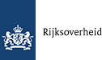
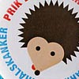

Opstelten wil opsporing op internet versterken
Minister Opstelten wil de opsporingsbevoegdheden op internet voor politie en Openbaar Ministerie versterken.
Nieuws
Uitgelicht
Het begint met taal
Nieuwe tv-spot van Postbus 51 roept mensen op zelf de handschoen op te pakken en Nederlands te leren.
Prik en bescherm
Vanaf 2009 krijgen meisjes van 12 jaar een vaccinatie tegen baarmoederhalskanker aangeboden.
Aangifte 2009
Elk jaar let de Belastingdienst extra goed op een bepaald onderdeel uit de belastingaangifte.
Overzicht van onderwerpen
Bouwen, wonen en leefomgeving
- Gezond en veilig wonen,
- Wijkverbetering,
- Wonen en vergunningen,
- Woningonderhoud en woningverbetering,
- ...
Consumentenbelangen
Cultuur, sport en vrije tijd
Economie en ondernemen
Familie, jeugd en gezin
Immigratie, integratie en inburgering
Internationale samenwerking
Landbouw, natuur en milieu
Onderwijs en wetenschap
Openbare orde en veiligheid
Organisatie van de overheid
- Organisatie van de overheid,
- Koninklijk huis,
- Verkiezingen en politieke partijen,
- Internationale samenwerking,
- ...
Rechtspraak
Buitenland: reizen, wonen en werken
Subsidies, uitkeringen en toeslagen
Verkeer en vervoer
Werk en loopbaan
Zorg en gezondheid
Ministeries
Welke ministeries voeren het beleid van het kabinet uit? En met welke onderwerpen houden ze zich bezig? Een overzicht.
Regering
Welke bewindspersonen vormen het Kabinet Balkenende IV? Verder: het laatste nieuws uit de ministerraad, de troonrede en meer.
Documenten en publicaties
Digitale overheidsinformatie: kamerstukken, brochures, jaaroverzichten, rapporten, toespraken, WOB-verzoeken en meer.